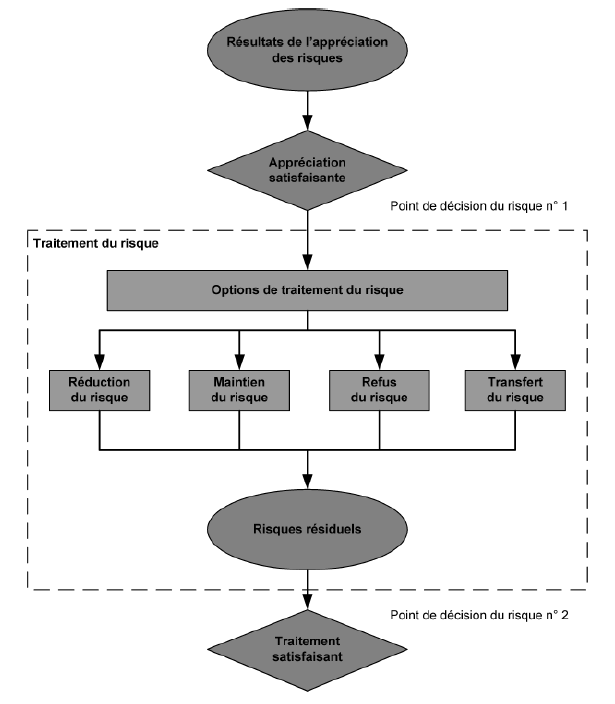
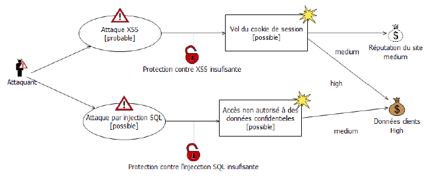

Il existe des risques au niveau réseau, systèmes, et applications.
Propriété de sécurité à préserver :
Une injection SQL vise à modifier une requête pour effectuer une action non autorisée.
$sql = "SELECT * FROM users WHERE username='$username' AND password='$password' ";
⤷
$sql = "SELECT * FROM users WHERE username=''a' OR '1'='1' --' AND password=''";
On peut également utiliser des commandes d'insertion, de suppression, etc... :
$sql = "SELECT * FROM users WHERE username='$username' AND password='$password' ";The Open Web Application Security Project ( lien vers le site )
⤷ Communauté de 30000 personnes (groupes locaux par pays)
⤷ Guide des bonnes pratiques
⤷ Fournit des outils
On cherche à établir le contexte externe (environnement culturel, social, politique, les relations avec les parties prenantes, etc...) et interne (l'organisation, les rôles, les capacités en termes de ressources, les normes, etc...)
Souvent réalisé en deux itérations. Une appréciation de haut niveau afin d'identifier les risques majeurs potentiels puis l'analyse plus détaillés de ces risque.
Sert à identifier les mesures pour réduire, maintenir, éviter ou transférer les risques.
Il est important de bien communiquer les risques et les enjeux aux parties prenantes afin qu'elle puisse prendre des décisions en connaissance de causes. Il est important que leurs perceptions des risques ainsi que leurs bénéfices soient bien documentée.
Responsable de la sécurité des Systèmes d'Information est chargé de la définition et de la mise en oeuvre de la politique de sécurité de l'entreprise. Suivant la taille de l'organisation, le RSSI peut encadrer une équipe d'ingénieurs et techniciens.
Permet la modélisation par des diagrammes d'une analyse de risque de sécurit ( développé par l'institut SINTEF à Oslo en Norvège - lien vers le site CORAS ).
Le Cross-Site Scripting ou XSS est une attaque par injection qui exploite les interactions entre une application Web et ses utilisateurs.
Un attaquant peut par exemple :
Et la liste n'est pas du tout exhaustive!